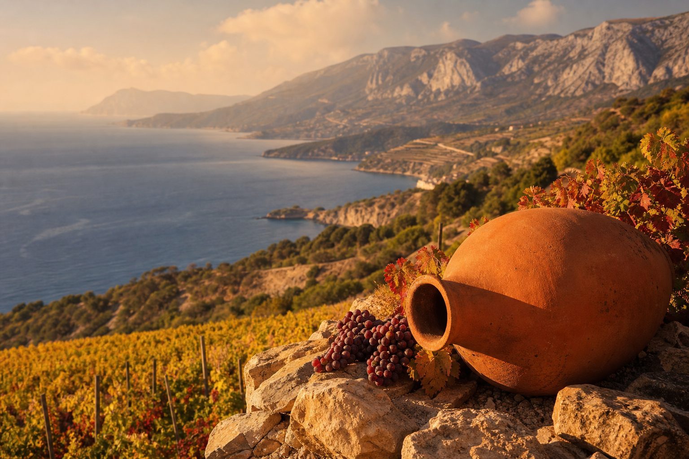

Виноделие России переживает возрождение, а соседние страны хранят древнейшие традиции — от грузинских квеври до армянского коньяка.
Семь винодельческих краёв — каждый со своим характером, сортами и маршрутами.
Колыбель виноделия и оазисы Средней Азии. Найдите страну для виртуального путешествия.
Умный сомелье подскажет, какое российское или грузинское вино открыть под ваше блюдо и настроение. Появится в следующей версии.